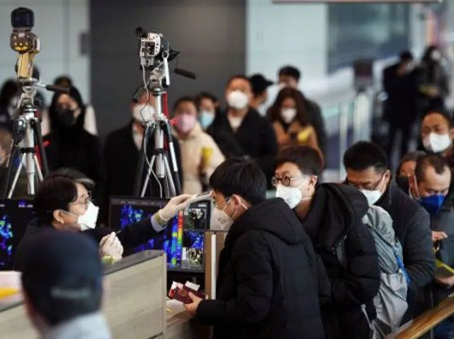

清冷的金融街背后，一场隐形“战疫”正在展开
原文链接 备份链接 金融街的“清冷”背后，是一场隐形“战疫”，且将是一场持久战。因为疫情对于经济金融的影响尚未尽显，即便疫情结束，回归经济本身，金融依然面临考验 摄影/黎立 文 | 《财经》记者 张威 张颖馨 俞燕 王颖 编辑 | …

牛津经济研究所估计，如果最坏情景出现，病毒演变为一场全球疫情，那么2020年全球经济将损失1.1万亿美元。面对如此多的不确定性，情景规划是投资者应对潜在形势的最佳方式——尤其是在目前市场基本乐观的情况下

*文 | 瑞什马·帕迪*
*编辑 | 张晓添*
大多数经济学家和策略师认为，新型冠状病毒将在未来几周得到遏制，并且中国当局将推出一项计划以缓解经济冲击。但是，牛津经济研究所(Oxford Economics)估计，如果最坏情景出现，病毒演变为一场全球疫情，那么2020年全球经济将损失1.1万亿美元。
本周新确诊感染病例数量一直在下降，但医学专家警告说，现在就断言疫情的危险已经解除还为时过早。截至发稿，已有近75300例确诊病例，超过2000人死亡。
面对如此多的不确定性，情景规划是投资者应对潜在形势的最佳方式——尤其是在目前市场基本乐观的情况下。标普500指数今年迄今已上涨近5%，而追踪中国公司的iShares MSCI China ETF(MCHI)今年迄今已上涨1.6%。人们预计，中国政府将出台更多刺激措施以帮助遭受重创的企业，这给投资者带来了一些安慰。
牛津经济研究所首席经济学家亚当·斯莱特(Adam Slater)在给客户的一份报告中写道，如果疫情蔓延至全球，上半年的经济增长或将降至近乎于零，美国和欧元区或将进入“技术性衰退”。这可能使2020年全球经济增速较2.3%的基线预期减少1.3个百分点，但可能会迅速复苏；而全球GDP仍将按照2021年增长2.9%的基线预期增长。
根据该机构的预测，如果疫情仅限于亚洲，那么2020年全球GDP或将从基线预测下降4000亿美元，或0.5个百分点。亚太地区的经济增长率或将从2019年底的4%下降到2020年上半年的1.5%，那将是自全球金融危机以来的最低水平。
这些情景是基于过去SARS和“猪流感”等疫情的经验，并假设经济方面痛苦将来自多个方面：人们生病时可支配开支降低；旅行限制继续施行，人们避免外出；许多人无法工作导致生产受阻；出行和旅游支出急剧下降。它还假定，由于不确定性、需求下降、供应链中断以及金融风险蔓延，投资水平将会降低，同时股价走低、货币市场利差上升。
不过，投资者普遍认为，经济将出现“V”型复苏——起初会遭受猛烈打击，然后在疫情得到遏制后迅速、大幅复苏。部分理由是，有观点认为，中国政府正在出台刺激措施以减轻经济遭受的沉重打击——从提供财政援助，到帮助工厂与科技公司建立联系，从而发现它们供应链中的薄弱环节。
但凯投宏观(Capital Economics)的朱利安·埃文斯-普里查德(Julian Evans-Pritchard)在给客户的另一份报告中写道，就业形势可能会阻碍经济迅速反弹的能力。据智联招聘的一项调查显示，尽管中国绝大多数上市公司有足够的资金维持至少两三个月的债务相关开支和薪酬开支，但13%的公司已经开始裁员。同时，除非经济活动“很快”反弹，否则失业情况还会进一步加剧。
埃文斯-普里查德(Evans-Pritchard)写道，中国自营职业或经营小型家庭企业的城市劳动力的当季收入将大幅下降，而那些离开原岗位、寻找新工作的外出务工者将找不到新工作。
在上市公司中，最脆弱的是房地产开发商。但除了情况最差的公司，大多数应该能够经受住至少三个月的疫情。更容易受到冲击的是中小企业，这些企业约占城市就业的一半，可能不会遵守中国政府不裁员的指令。
埃文斯-普里查德援引中国两所大学对1000家此类企业的调查称，该调查发现，除非情况有所改善，否则三分之一的企业将在一个月内耗尽资金，而两个月内耗尽资金的企业占比升至三分之二。
结论是：很多事情目前还是未知，而经济复苏可能不会像某些人希望的那样迅速或平稳。
翻译：小彩；《巴伦》(barronschina)原创文章，未经许可，不得转载。


责编 | 黄端 duanhuang@caijing.com.cn

原文链接 备份链接 金融街的“清冷”背后，是一场隐形“战疫”，且将是一场持久战。因为疫情对于经济金融的影响尚未尽显，即便疫情结束，回归经济本身，金融依然面临考验 摄影/黎立 文 | 《财经》记者 张威 张颖馨 俞燕 王颖 编辑 | …
原文链接 备份链接 作者：任尚坤 来源：*商业人物*（ID：*biz-leaders）* 北京时间1月31日凌晨，世界卫生组织召开记者会宣布：新型冠状病毒疫情被列为“国际关注的突发公共卫生事件”（Public Health …
原文链接 备份链接 2014年价格暴跌以来，全球石油行业的日子就不好过。2018年发生了价格过山车，2019年相对是个好年份， 2020年看来必须在需求不振和价格疲软的困境中艰难求生 图/IC 文 | 王能全 2019年以来，国际石油市场 …
原文链接 备份链接 整理 | 河 西 截至2020年2月22日12点，在这次疫情中，累计报告的死亡病例已经达到了2348人。 这些鲜活的生命，在一次突如其来的疫情中倒下了。他们中有普通人，也有院长、导演、院士、画家……很多都是各行各业中 …
原文链接 备份链接 2014年油价暴跌以来，全球石油行业的日子就不好过。2018年发生了价格过山车，2019年相对是个好年份， 2020年看来必须在需求不振和价格疲软的困境中艰难求生 图/IC *** 文 | 王能全*** 2019年以 …